Content strategy to reclaim the term veneco
Every once in a while a project comes along that goes beyond everyday work because it feels deeply personal. Designing the strategy and art direction of El Veneco was exactly that.
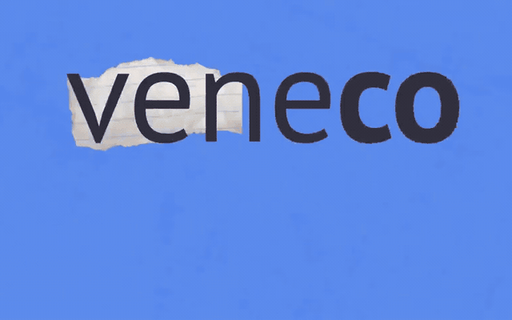
In Colombia, the term “veneco” is a battlefield: for some it’s a direct insult; for others, a flag of identity and reclaiming. The challenge of this project was to create a digital and content platform capable of opening uncomfortable conversations about Venezuelan migration, avoiding the usual stereotypes and without reducing the experience to a single story. We also wanted Arteaga Latam to position itself with a voice of its own on migration and development.
In the largest forced-displacement crisis Venezuela has ever faced, we decided to push forward a project of our own from Arteaga Latam. Three of us on the team were Venezuelan, which made this work a deep professional and personal challenge. I led the art direction, working with human-rights profiles and an audiovisual producer. With no external funding, everything depended on our ability to research on the street, produce content with limited resources and open conversations in a fairly polarized digital environment.
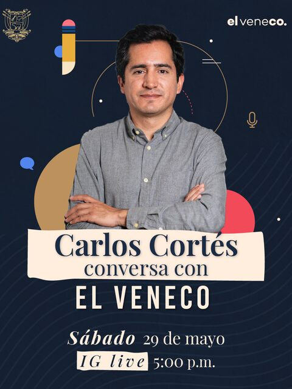
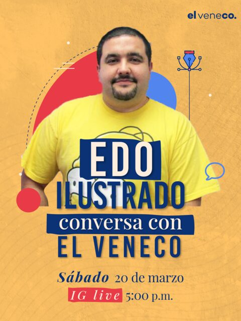
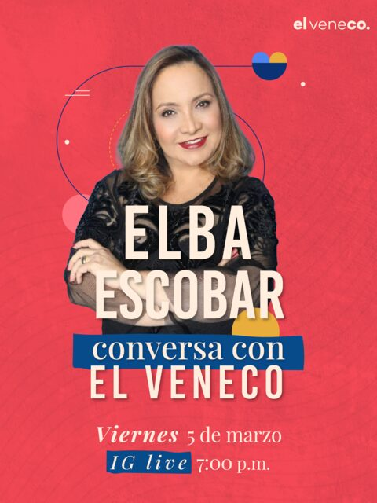
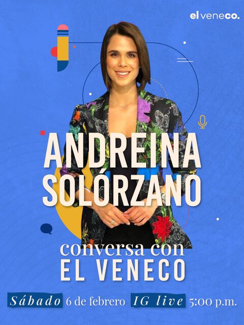
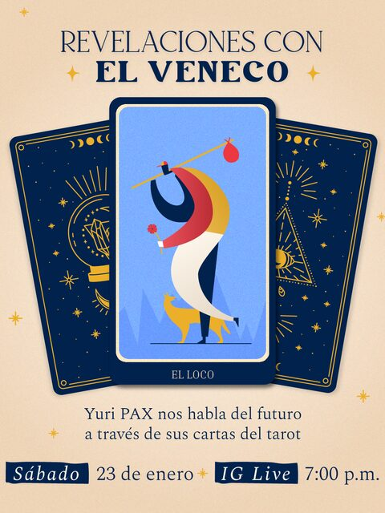
The research combined fieldwork with active listening on social media. We talked with journalists, entrepreneurs, institutional actors and citizens from both countries to map what the term really meant in everyday life. From those stories came pieces ranging from human profiles to playful, iconographic formats, using collage as a visual language to combine textures, photographs and testimonies, showing the richness of a community that used to be reduced to a superficial stereotype.
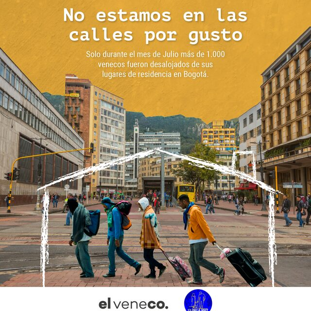
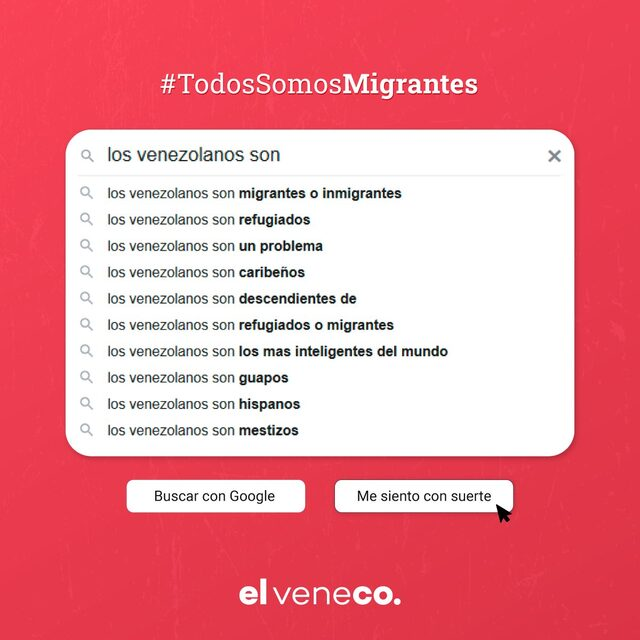
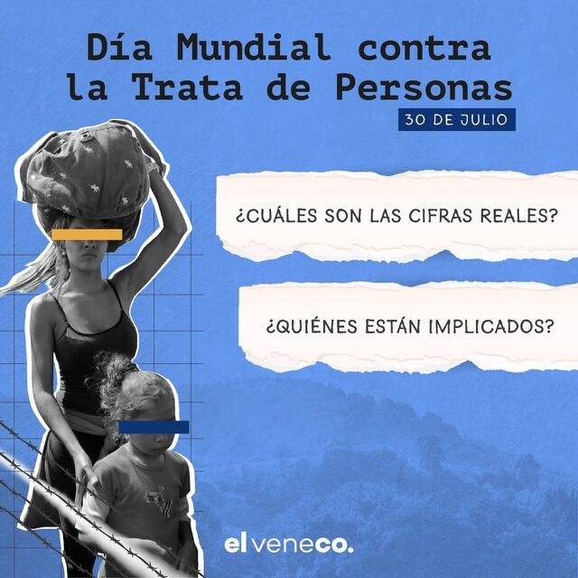
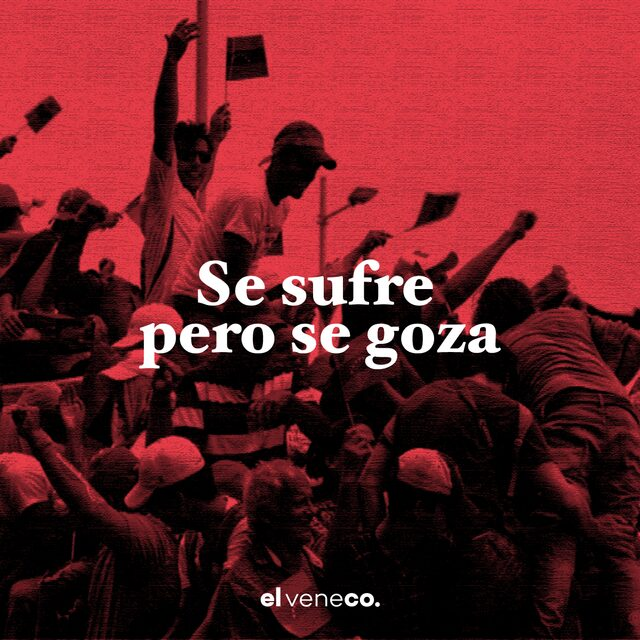
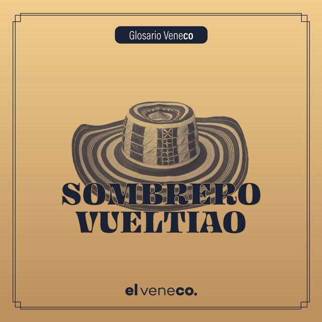
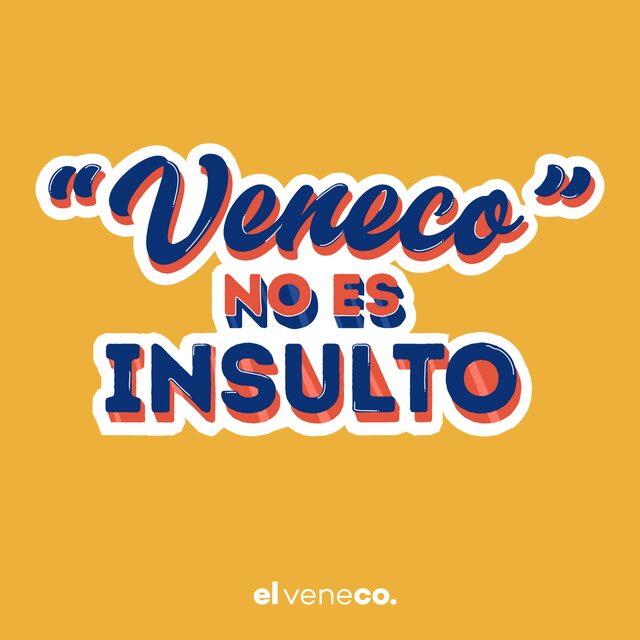
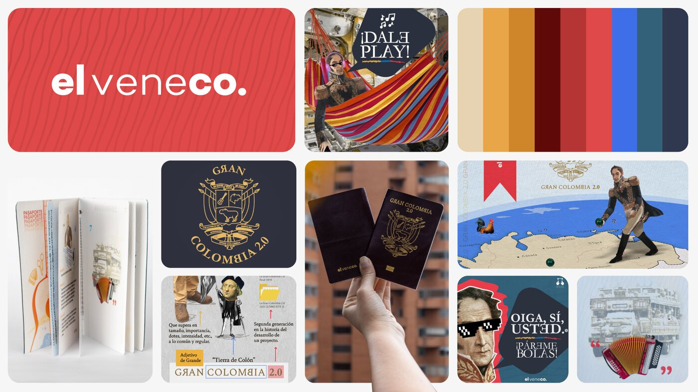
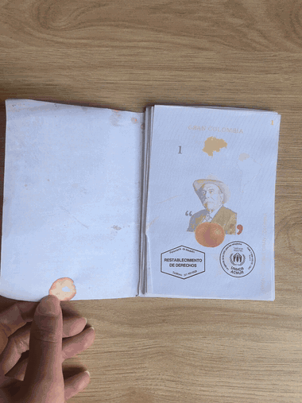
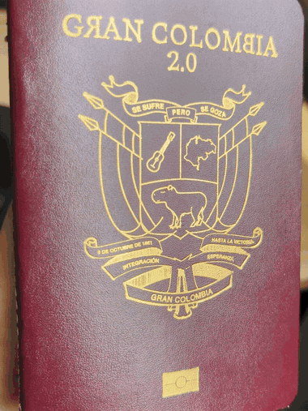
El Veneco closed after three years because it was hard to find funding for migration topics under such a contested name. The term turned out to be more disruptive than the market was willing to fund.
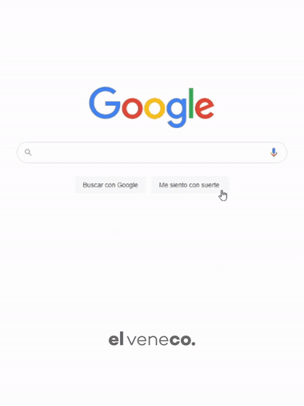
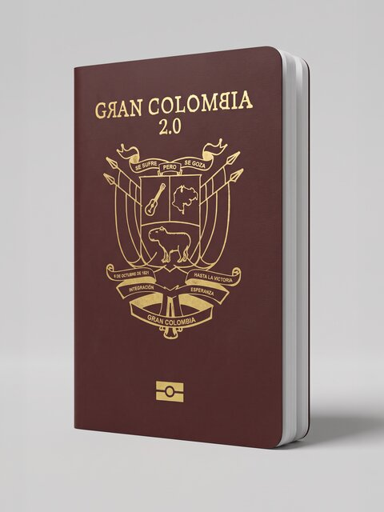
This project was deeply personal because I wasn’t telling only other people’s reality but my own story. When I left Venezuela my identity got a bit erased, but this project helped me rebuild it in community. That’s why veneco isn’t approached here as a distant object of study; I had to take the term on and decide what place it holds in my own identity in order to develop a project that was coherent, honest and in service of our own community.